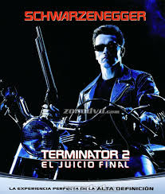
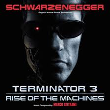
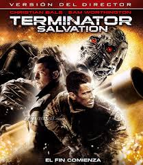
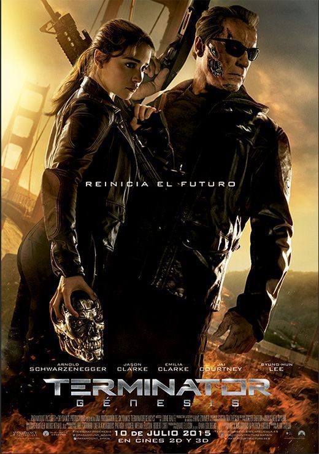
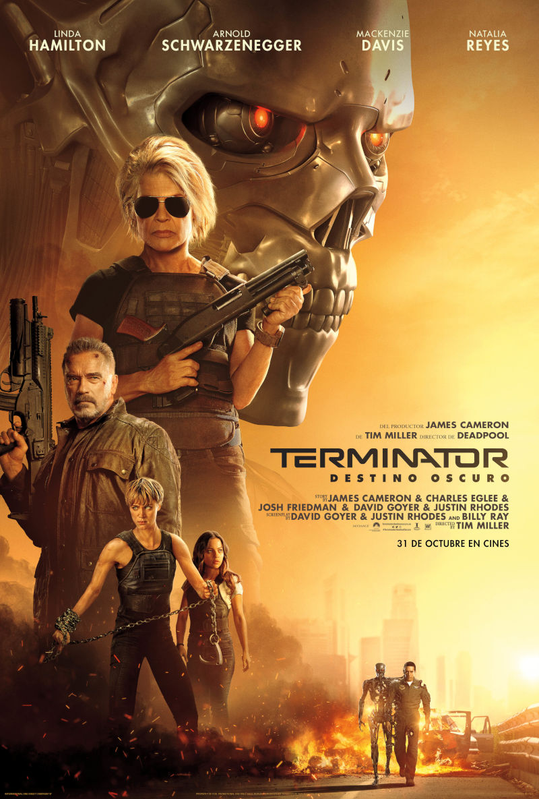

Debido al exito de The Terminator esta se convirtio en una saga la cual llevan realizando peliculas desde los
años 80 hasta la actualidad.
Secuelas
Terminator 2: el juicio final

Terminator 2: el juicio final es la secuela de 1991 de la película original de Terminator. Fue
escrita, dirigida y producida por James Cameron y protagonizada por Arnold Schwarzenegger, Linda
Hamilton, Edward Furlong y Robert Patrick. Después de que las máquinas fallaran al intentar evitar
el nacimiento de John Connor, lo vuelven a intentar, pero esta vez intentan asesinar a John cuando
sólo es un niño de 10 años (1995) y con un Terminator más avanzado, el T-1000. Igual que antes, John
envía al pasado a un protector para su yo adolescente, un Terminator reprogramado, idéntico al
Terminator de la película anterior. Después de diez años preparándose para la futura guerra, Sarah
decide utilizar la misma táctica que las máquinas utilizaron en ella: evitar que Skynet sea creada
destruyendo Cyberdyne Systems antes de que la inventen.
Terminator 3: La rebelión de las máquinas

Terminator 3: La rebelión de las máquinas es la película de 2003 secuela de la taquillera Terminator
2: el juicio final, dirigida por Jonathan Mostow y protagonizada por Arnold Schwarzenegger, Nick
Stahl, Claire Danes y Kristanna Loken. Como resultado de la destrucción de Cyberdyne al final de T2,
la toma de conciencia de Skynet ha sido pospuesta, pero no evitada. En un último intento de asegurar
la victoria de las máquinas, un nuevo Terminator, el T-X, es enviado atrás (2007) para matar a
tantos oficiales de alto rango como fuera posible, incluyendo a John Connor y a su futura mujer
Kate. Después de que el futuro Connor es asesinado por un modelo idéntico al de su protector
anterior, Kate lo reprograma y lo envía para salvarles a ambos del T-X.
Terminator Salvation

Terminator Salvation es la cuarta entrega de la serie de películas Terminator, estrenada el 21 de
mayo de 2009. Está escrita por David Campbell Wilson, John Brancato y Michael Ferris, dirigida por
Joseph "McG" McGinty Nichol, y protagonizada por Christian Bale como John Connor. Anton Yelchin
interpreta a Kyle Reese, que se hace amigo de Marcus, uno de los primeros Terminators. Sam
Worthington interpreta a Marcus; fue recomendado personalmente a McG por el creador de Terminator
James Cameron. Roland Kickinger realiza el papel de Terminator, con el rostro digitalizado de
Arnold Schwarzenegger.
El argumento de la película tiene lugar después de los acontecimientos de T3 en 2018 y se centra
principalmente en la guerra entre la humanidad y Skynet en un mundo post-apocalíptico. John Connor
seguirá siendo el personaje principal junto con un nuevo personaje llamado Marcus, que tiene la
"misma presencia como coprotagonista". Marcus es un humano convertido en androide como resultado
de los primeros experimentos de la fuerza aérea, lo que le genera una serie de dilemas existenciales
como su propio reconocimiento. James Middleton, productor asociado de la película, dijo que "va
sobre el nacimiento de un nuevo héroe," y McG dijo que también trataría sobre el desarrollo del
Terminator modelo 101.
Terminator Génesis

Terminator Génesis es la quinta entrega de esta franquicia dispuesta a comenzar a realizarse a
comienzos de 2014. Tras diversas problemáticas por la posesión de los derechos de la franquicia, la
secuela que originalmente iba a ser dirigida por McG (Terminator Salvation) y producida por The
Halcyon Company, será fruto de la Productora Annapurna Pictures. En diciembre de 2012 Skydance
productions (Star Trek: en la oscuridad, Misión imposible: Protocolo fantasma) se unió a Annapurna
Pictures para el proceso de producción de la película. En enero de 2013 fue reportado que Laeta
Kalogridis (Avatar, Alexander) y Patrick Lussier (Dracula 2000, Infierno al volante) fueron
contratados para escribir el guion; mientras que Arnold Schwarzenegger durante una rueda de prensa
en Londres por el estreno de El último desafío confirmó su participación en el proyecto.
Recientemente Paramount Pictures, quien después de cerrar hace tan solo unos días un acuerdo con
Annapurna Pictures, la compañía de Megan Ellison, y Skydance Productions, de David Ellison, anuncio
que la quinta entrega de la saga de Terminator sería estrenada el 26 de junio de 2015 y su trama no
será una continuación sino un reinicio de la historia de los filmes anteriores. Así, en esta quinta
película se relatarán hechos que tienen que ver con la madre de John Connor (Sarah Connor).
Terminator Génesis estaría ambientada en los años ochenta y en ella Schwarzenegger interpretaría a
un Terminator que protegerá a Sarah de una nueva intentona de Skynet, a través del tiempo para
intentar impedir la existencia del líder de la futura resistencia contra la tiranía de las máquinas.
Terminator: Destino oscuro

Terminator: Destino oscuro se estrenó en 2019. Debido a la poca acogida de la entrega Terminator
Génesis, James Cameron no sólo recuperó los derechos de su serie de películas, sino que además
anunció la posibilidad de retomar las películas para continuar la saga, buscando revitalizar e
incluso si es necesario empezar desde cero la franquicia. Además, Cameron también dijo que
tiene planes para volver a incluir a Arnold Schwarzenegger de nuevo a la franquicia. Esto sucedió
con Terminator: Destino oscuro.